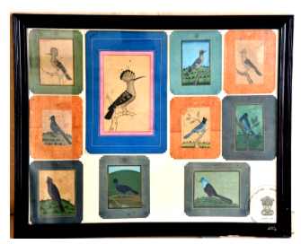

🔇 Is bhasha me is vastu ka audio abhi uplabdh nahi hai.
7. ACQ - 62 - 211- 3: दस लघु पक्षी

7. ACQ - 62 - 211- 3
इन दस पक्षियों में से चार पक्षी पहाड़ियों की चोटी पर बैठे हैं। लघु चित्रकला छोटे, बारीक और विस्तृत कलात्मक कार्यों को संदर्भित करती है, जो प्रायः चित्रया चित्रण होते हैं। इनका आकार सामान्यतः 25 वर्ग इंच से बड़ा नहीं होता और ये कैनवास पर बनाए जाते हैं। लघु चित्रकला की विशेषता इसका छोटा आकार और सूक्ष्म विवरण होता है, जिसके लिए उच्च स्तर की कुशलता और निपुणता की आवश्यकता होती है। पारंपरिक रूप से इन्हें चर्मपत्र (वेल्लम), तैयार गत्ता, तांबा या हाथीदांत जैसी सामग्रियों पर बारीक ब्रश और रंगों की मदद से बनाया जाता है। भारतीय उपमहाद्वीप में इस प्रकार की चित्रकला का उद्भव 10वीं शताब्दी में हुआ। आज भी लघु चित्रकला एक सुंदर ललित कला के रूप में प्रचलित है। कलाकार विभिन्न शैलियों और तकनीकों का अन्वेषण करते हुए इसे जारी रखते हैं और यह कई लोगों के लिए एक लोकप्रिय शौक भी है। इस कला का उद्गम भारत से हुआ माना जाता है और इसका इतिहास 20वीं शताब्दी तक जाता है।
7. ACQ - 62 - 211- 3: Ten Miniature Birds
7. ACQ - 62 - 211- 3
Of these ten birds, four are perched on the summits of hills. Miniature painting refers to small, fine and detailed works of art, usually pictures or illustrations. Their size is generally no larger than 25 square inches and they are made on canvas. Miniature painting is characterised by its small size and minute detail, which demands a high level of skill and mastery. Traditionally they were made on materials such as vellum, prepared cardboard, copper or ivory with the help of fine brushes and colours. In the Indian subcontinent this kind of painting arose in the 10th century. Miniature painting is still practised today as a beautiful fine art. Artists continue it while exploring various styles and techniques, and it is also a popular hobby for many. This art is believed to have originated in India and its history extends to the 20th century.
7 .ACQ-62-211-3: పది సూక్ష్మ పక్షులు
7 .ACQ-62-211-3
ఈ కళాఖండం 20వ శతాబ్దానికి చెందిన భారతీయ సూక్ష్మ చిత్రకళ. ఇందులో పది పక్షులు చిత్రీకరించబడ్డాయి, వాటిలో 4 పక్షులు చిన్న కొండల పై కూర్చుని ఉన్నాయి. సూక్ష్మ చిత్రకళ అంటే చిన్న, వివరాలతో కూడిన కళాఖండాలను (సాధారణంగా 25 చదరపు అంగుళాల కంటే చిన్నవి) సూచిస్తుంది, దీనికి అత్యధిక నైపుణ్యం మరియు ఖచ్చితత్వం అవసరం. ఈ చిత్రాలను సాంప్రదాయకంగా వెల్లుమ్, తయారుచేసిన కార్డు, రాగి లేదా దంతం వంటి పదార్థాలపై సన్నని బ్రష్లు మరియు రంగులను ఉపయోగించి వేస్తారు. భారత ఉపఖండంలో ఈ చిత్రకళా రూపం 10వ శతాబ్దంలో ఉద్భవించింది మరియు నేటికీ కళాకారులు వివిధ శైలులను అన్వేషిస్తూ దీన్ని ఒక ఉత్తమ కళారూపంగా అభ్యసిస్తున్నారు.
7۔اے سی کیو-62-211-3: دسچھوٹےپرندے
7۔اے سی کیو-62-211-3
7. اے سی کیو-62-211-3: دس چھوٹے پرندے
دس پرندوں میں سے چار پرندے ٹیلوں کی چوٹی پر بیٹھے ہوئے دکھائے گئے ہیں۔مینی ایچر پینٹنگایک ایسافن ہے جس میں نہایت باریک اور دقیق تفصیل کے ساتھ چھوٹے سائز کے فن پارے بنائے جاتے ہیں ۔ اکثر یہ تصویری خاکے یا مناظر ہوتے ہیں، جن کا سائز عموماً پچیس مربع انچ سے زیادہ نہیں ہوتا۔مینی ایچر پینٹنگ کی خصوصیت اس کی نہایت باریک کاریگری نفاست اور درستگی ہے، جس کے لیے اعلیٰ مہارت اور بے مثال صبر درکار ہوتا ہے۔ یہ تصویریں چمڑے کی جھلی، تیار شدہ کارڈ، تانبے، ہاتھی دانت پر نہایت باریک برش اور مخصوص رنگوں کے ذریعے بنائی جاتی تھیں۔ برصغیر میں اس فن مصوری کا آغاز دسویں صدی میں ہوا۔ مینی ایچر پینٹنگ آج بھی ایک نفیس فن کے طور پر رائج ہے، جہاں فنکار مختلف اسالیب اور تکنیکوں کے ساتھ تجربات کر رہے ہیں۔ اس کے ساتھ ساتھ یہ فن بہت سے افراد کے لیے ایک مقبول مشغلہ بھی ہے۔ یہ مینی ایچر پینٹنگ بھارت سے تعلق رکھتی ہے اور اس کا تعلق بیسویں صدی سے ہے
دس پرندوں میں سے چار پرندے ٹیلوں کی چوٹی پر بیٹھے ہوئے دکھائے گئے ہیں۔مینی ایچر پینٹنگایک ایسافن ہے جس میں نہایت باریک اور دقیق تفصیل کے ساتھ چھوٹے سائز کے فن پارے بنائے جاتے ہیں ۔ اکثر یہ تصویری خاکے یا مناظر ہوتے ہیں، جن کا سائز عموماً پچیس مربع انچ سے زیادہ نہیں ہوتا۔مینی ایچر پینٹنگ کی خصوصیت اس کی نہایت باریک کاریگری نفاست اور درستگی ہے، جس کے لیے اعلیٰ مہارت اور بے مثال صبر درکار ہوتا ہے۔ یہ تصویریں چمڑے کی جھلی، تیار شدہ کارڈ، تانبے، ہاتھی دانت پر نہایت باریک برش اور مخصوص رنگوں کے ذریعے بنائی جاتی تھیں۔ برصغیر میں اس فن مصوری کا آغاز دسویں صدی میں ہوا۔ مینی ایچر پینٹنگ آج بھی ایک نفیس فن کے طور پر رائج ہے، جہاں فنکار مختلف اسالیب اور تکنیکوں کے ساتھ تجربات کر رہے ہیں۔ اس کے ساتھ ساتھ یہ فن بہت سے افراد کے لیے ایک مقبول مشغلہ بھی ہے۔ یہ مینی ایچر پینٹنگ بھارت سے تعلق رکھتی ہے اور اس کا تعلق بیسویں صدی سے ہے
7. ACQ - 62 - 211- 3: দশটি ক্ষুদ্র পাখি
7. ACQ - 62 - 211- 3
এই দশটি পাখির মধ্যে চারটি পাখি পাহাড়ের চূড়ায় বসে আছে। ক্ষুদ্রাকৃতি চিত্রকলা বলতে ছোট, সূক্ষ্ম ও বিস্তারিত শিল্পকর্ম বোঝায়, যেগুলি সাধারণত চিত্র বা চিত্রণ হয়ে থাকে। এগুলির আকার সাধারণত ২৫ বর্গ ইঞ্চির বেশি হয় না এবং এগুলি ক্যানভাসে আঁকা হয়। ক্ষুদ্রাকৃতি চিত্রকলার বৈশিষ্ট্য হলো এর ছোট আকার ও সূক্ষ্ম বিবরণ, যার জন্য উচ্চ স্তরের দক্ষতা ও নৈপুণ্য প্রয়োজন। ঐতিহ্যগতভাবে এগুলি চর্মপত্র (ভেলাম), প্রস্তুত পিচবোর্ড, তামা বা হাতির দাঁতের মতো উপকরণের উপর সূক্ষ্ম তুলি ও রঙের সাহায্যে আঁকা হয়। ভারতীয় উপমহাদেশে এই ধরনের চিত্রকলার উদ্ভব হয়েছিল ১০ম শতাব্দীতে। আজও ক্ষুদ্রাকৃতি চিত্রকলা একটি সুন্দর চারুকলা হিসাবে প্রচলিত। শিল্পীরা বিভিন্ন শৈলী ও কৌশল অন্বেষণ করতে করতে একে এগিয়ে নিয়ে যান এবং এটি অনেকের কাছে একটি জনপ্রিয় শখও বটে। এই শিল্পের উৎপত্তি ভারতে হয়েছে বলে মনে করা হয় এবং এর ইতিহাস ২০শ শতাব্দী পর্যন্ত বিস্তৃত।
7. ACQ-62-211-3: દસ મિનિએચર પક્ષીઓ
7. ACQ-62-211-3
દસ પક્ષીઓમાંથી ચાર ટેકરીઓની ટોચ પર બેઠા છે. મિનિએચર એ , વિગતવાર કલાકૃતિઓનો ઉલ્લેખ કરે છે, ઘણીવાર પ્રતિકૃતિઓ અથવા ચિત્રો, જે સામાન્ય રીતે 25 ચોરસ ઇંચથી મોટા કેનવાસ પર બનાવવામાં આવે છે. મિનિએચર ચિત્રો તેમના નાના કદ અને જટિલ વિગતો દ્વારા વર્ગીકૃત થયેલ છે, જેમાં ઉચ્ચ સ્તરની કુશળતા અને ચોકસાઈની જરૂર પડે છે. તે પરંપરાગત રીતે વેલમ, તૈયાર કાર્ડ, તાંબુ અથવા હાથીદાંત જેવી સામગ્રી પર બારીક પીંછી અને પેઇન્ટનો ઉપયોગ કરીને દોરવામાં આવે છે. 10મી સદી દરમિયાન ભારતીય ઉપખંડમાં ચિત્રકામનો આ પ્રકાર ઉભરી આવ્યો. મિનિએચર ચિત્રકામનો અભ્યાસ એક સુંદર કળા સ્વરૂપ તરીકે થતો રહે છે, જેમાં કલાકારો વિવિધ શૈલીઓ અને તકનીકોનું અન્વેષણ કરે છે, અને તે ઘણા લોકોનો પ્રિય શોખ પણ છે. તેનો ઉદ્ભવ ભારતમાં 20મી સદીમાં થયો હતો.
8. સાતમી-27: પક્ષીઓના વિવિધ પ્રકાર
કાપડ પરના આ વોટરકલર ચિત્રકળામાં વિવિધ પક્ષીઓને ઝાડની ડાળી પર બેઠેલા, ફ્રેમવાળા, સફેદ શિંગડાના ટુફ્ટ સાથે પક્ષીના ડાબા પગમાંથી બહાર નીકળતા દર્શાવવામાં આવ્યા છે. વોટરકલર પેઇન્ટિંગ એ એક તકનીક છે જેમાં પાણી આધારિત દ્રાવણમાં લટકાવેલા રંગદ્રવ્યો સપાટી પર, સામાન્ય રીતે કાગળ પર, બ્રશનો ઉપયોગ કરીને કરવામાં આવે છે. તેમના તેજસ્વી અને અર્ધપારદર્શક રંગો માટે જાણીતા, ઉપયોગમાં લેવાતા બારીક પીસેલા રંગદ્રવ્યો ઘણીવાર ખનિજો, રેઝિન અથવા શાકભાજી જેવા કુદરતી સ્ત્રોતોમાંથી મેળવવામાં આવે છે. ગમ અરેબિક એક સામાન્ય બાઈન્ડર છે જે રંગદ્રવ્યના કણોને વિખેરી નાખે છે અને તેમને સબસ્ટ્રેટ સાથે વળગી રહેવામાં મદદ કરે છે. વોટરકલર સામાન્ય રીતે સફેદ કાગળ પર, સામાન્ય રીતે વેલમ પર લાગુ કરવામાં આવે છે. વોટરકલર કળા યુરોપમાં પેલિઓલિથિક ગુફા ચિત્રોમાંથી શરૂ થાય છે.
8. સાતમી-27: પક્ષીઓના વિવિધ પ્રકાર
કાપડ પરના આ વોટરકલર ચિત્રકળામાં વિવિધ પક્ષીઓને ઝાડની ડાળી પર બેઠેલા, ફ્રેમવાળા, સફેદ શિંગડાના ટુફ્ટ સાથે પક્ષીના ડાબા પગમાંથી બહાર નીકળતા દર્શાવવામાં આવ્યા છે. વોટરકલર પેઇન્ટિંગ એ એક તકનીક છે જેમાં પાણી આધારિત દ્રાવણમાં લટકાવેલા રંગદ્રવ્યો સપાટી પર, સામાન્ય રીતે કાગળ પર, બ્રશનો ઉપયોગ કરીને કરવામાં આવે છે. તેમના તેજસ્વી અને અર્ધપારદર્શક રંગો માટે જાણીતા, ઉપયોગમાં લેવાતા બારીક પીસેલા રંગદ્રવ્યો ઘણીવાર ખનિજો, રેઝિન અથવા શાકભાજી જેવા કુદરતી સ્ત્રોતોમાંથી મેળવવામાં આવે છે. ગમ અરેબિક એક સામાન્ય બાઈન્ડર છે જે રંગદ્રવ્યના કણોને વિખેરી નાખે છે અને તેમને સબસ્ટ્રેટ સાથે વળગી રહેવામાં મદદ કરે છે. વોટરકલર સામાન્ય રીતે સફેદ કાગળ પર, સામાન્ય રીતે વેલમ પર લાગુ કરવામાં આવે છે. વોટરકલર કળા યુરોપમાં પેલિઓલિથિક ગુફા ચિત્રોમાંથી શરૂ થાય છે.
7. ACQ-62-211-3: ಟೆನ್ ಮಿನಿಯೇಚರ್ ಬರ್ಡ್ಸ್
7. ACQ-62-211-3
10 ಪಕ್ಷಿಗಳಪೈಕಿ 4 ಪಕ್ಷಿಗಳುಗುಡ್ಡಗಳಮೇಲೆಕುಳಿತಿವೆ. ಕಿರುಚಿತ್ರಕಲೆಎನ್ನುವುದುಸಣ್ಣದಾದ, ವಿವರವಾದಕಲಾಕೃತಿಗಳನ್ನುಸೂಚಿಸುತ್ತದೆ, ಇವುಹೆಚ್ಚಾಗಿಭಾವಚಿತ್ರಗಳುಅಥವಾವಿವರಣಾತ್ಮಕಚಿತ್ರಗಳಾಗಿದ್ದು, ಸಾಮಾನ್ಯವಾಗಿಕ್ಯಾನ್ವಾಸ್ಮೇಲೆಮಾಡಲಾದ 25 ಚದರಇಂಚುಗಳಿಗಿಂತದೊಡ್ಡದಾಗಿರುವುದಿಲ್ಲ. ಕಿರುಚಿತ್ರಗಳುಅವುಗಳಸಣ್ಣಗಾತ್ರಮತ್ತುಸಂಕೀರ್ಣವಾದವಿವರಗಳಿಂದಗುರುತಿಸಲ್ಪಡುತ್ತವೆ, ಇವುಗಳಿಗೆಉನ್ನತಮಟ್ಟದಕೌಶಲ್ಯಮತ್ತುನಿಖರತೆಯಅಗತ್ಯವಿರುತ್ತದೆ. ಇವುಗಳನ್ನುಸಾಂಪ್ರದಾಯಿಕವಾಗಿವೆಲ್ಲಂ (ಚರ್ಮದಕಾಗದ), ಸಿದ್ಧಪಡಿಸಿದಕಾರ್ಡ್, ತಾಮ್ರಅಥವಾಆನೆಯದಂತದಂತಹವಸ್ತುಗಳಮೇಲೆ, ಸಣ್ಣಕುಂಚಗಳುಮತ್ತುಬಣ್ಣಗಳನ್ನುಬಳಸಿಚಿತ್ರಿಸಲಾಗುತ್ತದೆ. ಭಾರತೀಯಉಪಖಂಡದಲ್ಲಿ ಈ ಚಿತ್ರಕಲೆಯು 10ನೇ ಶತಮಾನದಅವಧಿಯಲ್ಲಿಹೊರಹೊಮ್ಮಿತು. ಕಿರುಚಿತ್ರಕಲೆಯುಒಂದುಲಲಿತಕಲೆಯಾಗಿಮುಂದುವರಿಯುತ್ತಿದ್ದು, ಕಲಾವಿದರುವಿವಿಧಶೈಲಿಮತ್ತುತಂತ್ರಗಳನ್ನುಅನ್ವೇಷಿಸುತ್ತಿದ್ದಾರೆಮತ್ತುಇದುಅನೇಕರಿಗೆಜನಪ್ರಿಯಹವ್ಯಾಸವೂಆಗಿದೆ. ಈ ಕಲಾಕೃತಿಯನ್ನುಭಾರತದಲ್ಲೆರಚಿಸಲಾಗಿದೆಮತ್ತುಇದು 20ನೇ ಶತಮಾನಕ್ಕೆಸೇರಿದ್ದಾಗಿದೆ.
7. ACQ-62-211-3:ଦଶଟି ସୂକ୍ଷ୍ମ ଆକୃତିର ପକ୍ଷୀଙ୍କଚିତ୍ର
7. ACQ-62-211-3
ଏହି ଚିତ୍ର କଳାରେଦଶଟି ପକ୍ଷୀଙ୍କ ଚିତ୍ର ଦେଖିବାକୁ ମିଳିଥାଏ, ଯାହା ମଧ୍ୟରୁ,ଚାରୋଟି ପକ୍ଷୀ ପାହାଡ଼ ଉପରେ ବସିଛନ୍ତି।ଏହାହେଉଛି ଲଘୁ ଚିତ୍ରକଳା ଯେଉଁଥିରେ ସୂକ୍ଷ୍ମ, ବିସ୍ତୃତ କଳାକୃତି, ପ୍ରାୟତଃଏହାକୁ ପୋର୍ଟ୍ରେଟ୍ କିମ୍ବାଲଘୁ ଚିତ୍ରକଳା କୁହାଯାଏ, ସାଧାରଣତଃଏହାପଚିଶ ବର୍ଗ ଇଞ୍ଚରୁ ବଡ଼ହୁଏନାହିଁ,ଏବଂ ଏହାକୁ କାନ୍ଭାସରେ ତିଆରିକରାଯାଇଥାଏ। ଲଘୁ ଚିତ୍ରକଳାଗୁଡ଼ିକ ସେମାନଙ୍କର ସୂକ୍ଷ୍ମ ଆକାର ଏବଂ ଜଟିଳ କଳାକୃତି ପାଇଁ ଚିହ୍ନିତହୋଇଥାନ୍ତି, ଯେଉଁଥିପାଇଁ ଉଚ୍ଚ ସ୍ତରର ଦକ୍ଷତା ଏବଂପୂର୍ଣ୍ଣ ସଠିକତାର ଆବଶ୍ୟକତାରହିଥାଏ। ଏଗୁଡ଼ିକୁ ପାରମ୍ପରିକ ଭାବରେ ଭେଲମ୍, ହସ୍ତ ନିର୍ମିତ କାର୍ଡ, ତମ୍ବା କିମ୍ବା ହାତୀଦାନ୍ତ ଭଳି ସାମଗ୍ରୀରେ ପତଳା ବ୍ରଶ୍ ଏବଂ ରଙ୍ଗ ବ୍ୟବହାର କରି ଚିତ୍ରିତ କରାଯାଏ। ଦଶମ ଶତାବ୍ଦୀରେ ଭାରତୀୟ ଉପମହାଦେଶରେ ଏହି ପ୍ରକାରର ଚିତ୍ରକଳା ଦେଖାଯାଇଥିଲା। ଆଜି ମଧ୍ୟ ଏହାକୁ ଗୋଟିଏ ଲଳିତ କଳା ଭାବରେ,ବହୁ ସ୍ଥାନରେ ଲଘୁ ଚିତ୍ରକଳା ରୂପରେ ଅଭ୍ୟାସ କରାଯାଉଅଛି, ଯେଉଁଠାରେ କଳାକାରମାନେଏଥିରେ ଯୋଗ କରିବା ନିମନ୍ତେ ବିଭିନ୍ନପ୍ରକାରନୂତନ ଶୈଳୀ ଏବଂ କୌଶଳ ଅନୁସନ୍ଧାନ କରୁଛନ୍ତି, ଏବଂ ଏହା ଅନେକଙ୍କ ପାଇଁ ଏକ ଲୋକପ୍ରିୟ ରୁଚି ମଧ୍ୟହୋଇପାରିଛି। ଏହା ଭାରତରେ ଆରମ୍ଭ ହୋଇଥିଲା ଏବଂ ଏହାର ଇତିହାସ ବିଂଶ ଶତାବ୍ଦୀରୁ ରହିଛି।
Item 7
7. ACQ-62-211-3: പത്ത്മിനിയേച്ചർ പക്ഷികൾ
7. ACQ-62-211-3
പത്ത്പക്ഷികളിൽ നാലെണ്ണംകുന്നിൻചെരിവുകൾക്ക്മുകളിൽ ഇരിക്കുന്നതായിചിത്രീകരിച്ചിരിക്കുന്നു. സാധാരണയായി 25 ചതുരശ്രഇഞ്ചിൽ കൂടാത്തവലുപ്പത്തിൽ, ക്യാൻവാസിൽ അതീവസൂക്ഷ്മതയോടെവരയ്ക്കുന്നചെറിയകലാസൃഷ്ടികളെയാണ്മിനിയേച്ചർ പെയിന്റിംഗ്എന്ന്വിളിക്കുന്നത്. ഇവയുടെപ്രധാനസവിശേഷതചെറിയവലുപ്പവുംസങ്കീർണ്ണമായവിശദാംശങ്ങളുമാണ്; ഇത്പൂർത്തിയാക്കാൻ ഉയർന്നതലത്തിലുള്ളനൈപുണ്യവുംകൃത്യതയുംആവശ്യമാണ്.
പരമ്പരാഗതമായിവെല്ലം ,പ്രത്യേകംതയ്യാറാക്കിയകാർഡുകൾ, ചെമ്പ്അല്ലെങ്കിൽ ആനക്കൊമ്പ്എന്നിവയിലാണ്ഇത്തരംചിത്രങ്ങൾ വരയ്ക്കുന്നത്. പത്താംനൂറ്റാണ്ടിലാണ്ഇന്ത്യൻ ഉപഭൂഖണ്ഡത്തിൽ ഈ ചിത്രകലാരീതിഉത്ഭവിച്ചത്. ഇന്നുംഒരുമികച്ചകലാരൂപമായിഇത്തുടരുന്നു; കലാകാരന്മാർ വിവിധശൈലികളുംസാങ്കേതികവിദ്യകളുംഇതിൽ പരീക്ഷിക്കുന്നുണ്ട്. പലർക്കുംഇതൊരുജനപ്രിയവിനോദംകൂടിയാണ്. ഇരുപതാംനൂറ്റാണ്ടിൽ ഇന്ത്യയിൽ നിർമ്മിക്കപ്പെട്ടതാണ് ഈ മിനിയേച്ചർ ചിത്രം.
പരമ്പരാഗതമായിവെല്ലം ,പ്രത്യേകംതയ്യാറാക്കിയകാർഡുകൾ, ചെമ്പ്അല്ലെങ്കിൽ ആനക്കൊമ്പ്എന്നിവയിലാണ്ഇത്തരംചിത്രങ്ങൾ വരയ്ക്കുന്നത്. പത്താംനൂറ്റാണ്ടിലാണ്ഇന്ത്യൻ ഉപഭൂഖണ്ഡത്തിൽ ഈ ചിത്രകലാരീതിഉത്ഭവിച്ചത്. ഇന്നുംഒരുമികച്ചകലാരൂപമായിഇത്തുടരുന്നു; കലാകാരന്മാർ വിവിധശൈലികളുംസാങ്കേതികവിദ്യകളുംഇതിൽ പരീക്ഷിക്കുന്നുണ്ട്. പലർക്കുംഇതൊരുജനപ്രിയവിനോദംകൂടിയാണ്. ഇരുപതാംനൂറ്റാണ്ടിൽ ഇന്ത്യയിൽ നിർമ്മിക്കപ്പെട്ടതാണ് ഈ മിനിയേച്ചർ ചിത്രം.